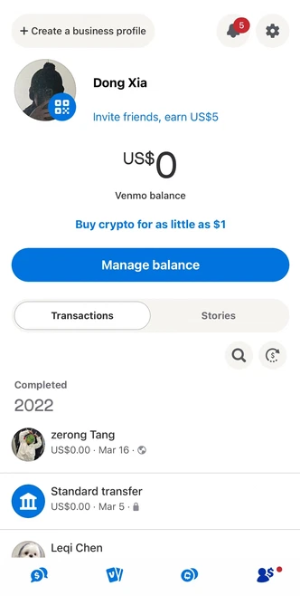

Apple Pay for Debit Cards
Time Duration Project Year
6 weeks School Project 2021
This project asked us to add new features to an
Process
existing app. As a new payment tool, Apple Pay has
Heuristic Analysis
perfected many of the features of credit cards, but I
User Research
found that Apple Pay has very limited features for
Prototyping
debit cards, and thats where I started.
This project asked us to add new features to an existing app. As a new payment tool, Apple Pay has perfected many of the features of credit cards, but I found that Apple Pay has very limited features for debit cards, and thats where I started.
1. Heuristic Analysis

Venmo and Chase Quick Pay as
my main payment tool, the most
prominent feature of the two
Apps is the quick transfer.
Venmo can add the bank to
transfer or withdraw funds, unfortunately
these features are not
available on Apple Pay. Venmo and Chase Quick Pay as my main payment tool, the most prominent feature of the two Apps is the quick transfer. Venmo can add the bank to transfer or withdraw funds, unfortunately these features are not available on Apple Pay.
2. User Research
- High frequency of using Apple Pay.
Some people use it 7-10 times a day.
- Most people use credit cards, but those
who use debit cards point out the following
problems:
a) The function is too simple.
b) Users have to go to third party app to
check balance..
c) Users cannot transfer money within the
Apple Pay.
- Credit cards/Apple Cards users are pretty
satisfied on the features that already had on
Apple Pay.
3. Low Fidelity
Besides transactions that its already have, I
want to add features like weekly usage,
income, and in-app transfer.
4. High Fidelity
For a debit card, users have income and spending which
indicated with two different colors on transactions. Users are able
to see their total income and where the income come from.

Now, check your balance and send money to your
contacts/ friends within the Apple Pay. Users are able to
send money via Airdrop when they are face to face.
Check users weekly, monthly or yearly usage at this screen,
and details for one transaction.

Set up a "next purchase limitation" for users' debit card so their kids won't max out the card.